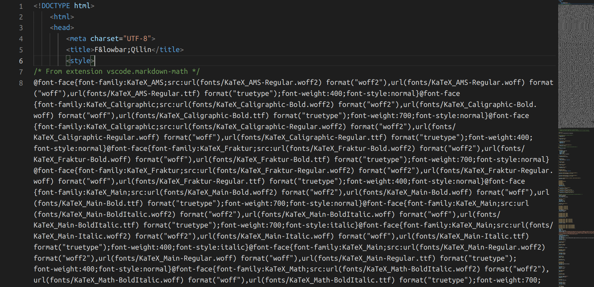
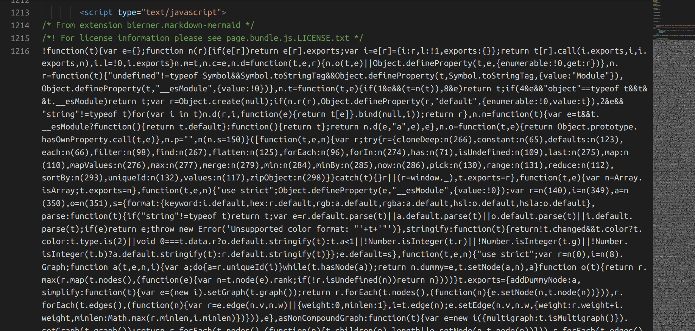
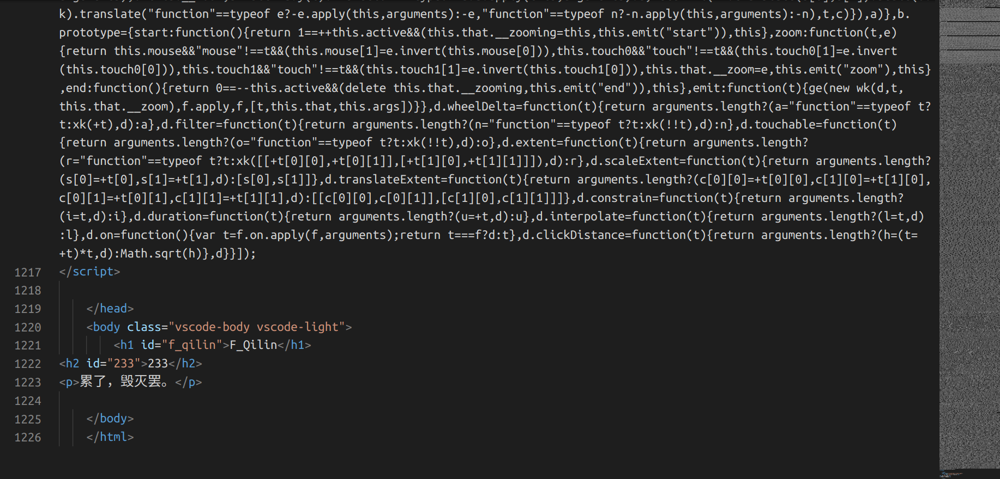
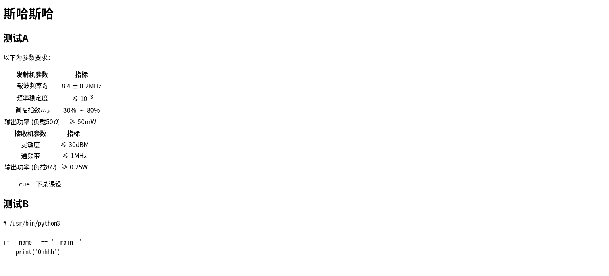
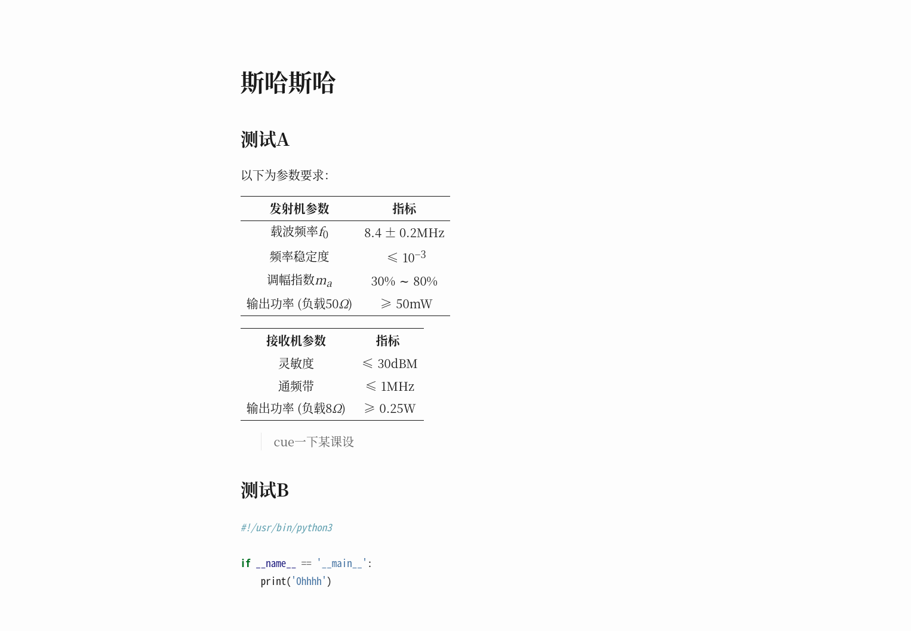
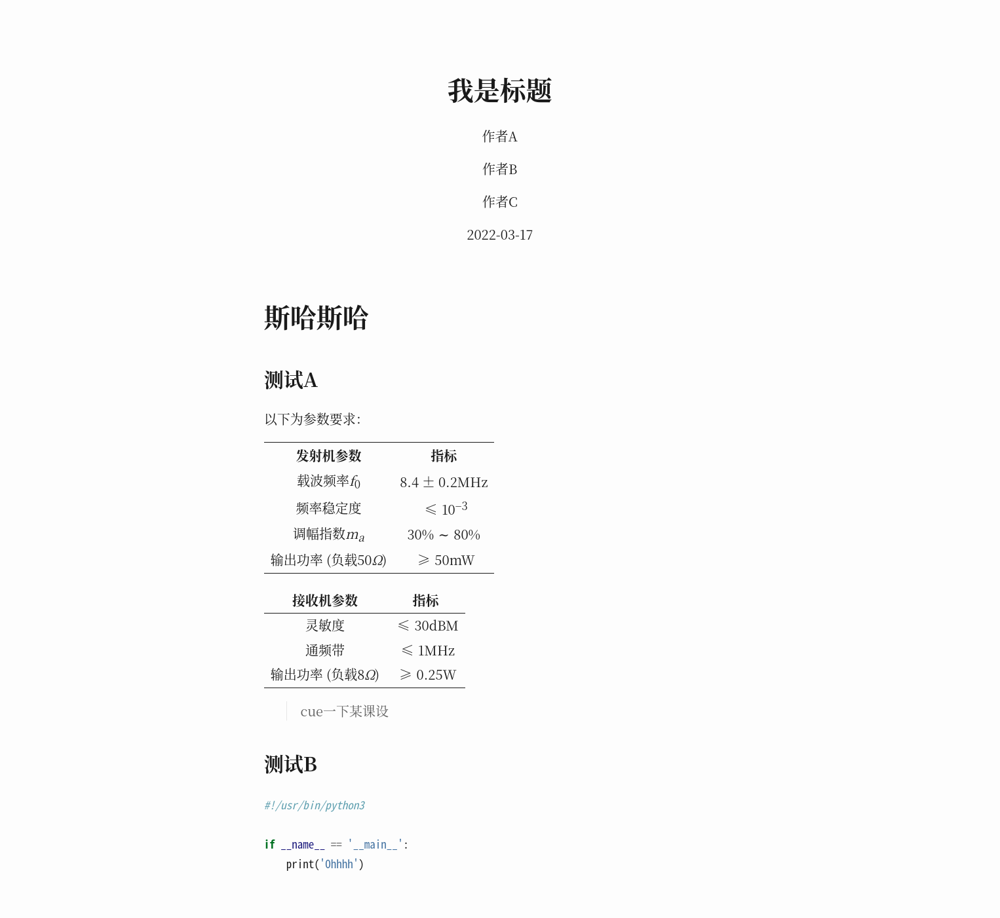
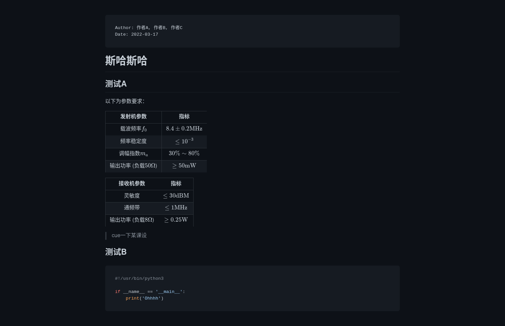

Pandoc + Markdown 调教记录
![]()
嘿嘿嘿，Markdown，嘿嘿嘿……
问题引入¶
个人非常喜欢VSCode的GitHub Markdown Preview插件，尤其是其中的预览与生成HTML功能。
但是，如果看下生成后的文件……
原文件：
# F_Qilin
## 233
累了，毁灭罢。
生成的文件：
<!DOCTYPE html>
<html>
<head>
<meta charset="UTF-8">
<title>F_Qilin</title>
<!-- 第6行 -->
<!-- 巴拉巴拉一大堆 -->
<!-- 第1218行 -->
</head>
<body class="vscode-body vscode-light">
<h1 id="f_qilin">F_Qilin</h1>
<h2 id="233">233</h2>
<p>累了，毁灭罢。</p>
</body>
</html>
有点不太直观，放点截图哈：



有点不忍直视啊。
合着这么大个文件，大部分都是直接套呗？
因此，我萌生了一个想法：有没有什么方案能让我自行生成网页呢？
生成原理¶
一般来讲也就两个部分：
- Markdown语法转HTML语法
- 将生成的body填入到模板中
关于语法转换，感觉很多工具都可以做到；
至于模板，准备一个就行了。
因为以前安装过Pandoc，所以这次用Pandoc来一波带走自动化生成。
Pandoc使用¶
Pandoc官方网站
关于css和模板，可参考这里。
首先，安装Pandoc。自己装。
写个Markdown文件：
document.md
# 斯哈斯哈
## 测试A
以下为参数要求：
| 发射机参数 | 指标 |
| :-----------------------: | :---------------------: |
| 载波频率$f_0$ | $8.4\pm0.2\mathrm{MHz}$ |
| 频率稳定度 | $\leq10^{-3}$ |
| 调幅指数$m_a$ | $30\%\sim80\%$ |
| 输出功率 (负载$50\Omega$) | $\geq50\mathrm{mW}$ |
| 接收机参数 | 指标 |
| :----------------------: | :------------------: |
| 灵敏度 | $\leq30\mathrm{dBM}$ |
| 通频带 | $\leq1\mathrm{MHz}$ |
| 输出功率 (负载$8\Omega$) | $\geq0.25\mathrm{W}$ |
> cue一下某课设
## 测试B
``` python
#!/usr/bin/python3
if __name__ == '__main__':
print('Ohhhh')
```
然后直接开终端输入：
pandoc document.md -o document.html
生成不带样式的document.html文件，打开：

还不错哈，但是感觉好像是几十年前的界面……
使用-s参数，使用默认模板生成独立网页：
pandoc -s document.md -o document.html

这回好多了，就这样放着也不错。
不过，如果我想实现GitHub主题之类的效果呢？
比如，应用github-markdown-css：
pandoc -s document.md -c https://cdn.jsdelivr.net/npm/github-markdown-css@5.1.0/github-markdown-light.css -o document.html
效果……诶怎么没用了？
开一下F12，发现除了引用的css以外，还有Pandoc默认样式。
看来得改一下模板了。
模板修改¶
首先输出模板：
pandoc -D html > template.html
看见一堆乱七八糟的东西，但是只需要改改就能来个大变样。
除了HTML以外，不难发现这些东西：
template.html
<!-- ... -->
$for(author-meta)$
<meta name="author" content="$author-meta$" />
$endfor$
$if(date-meta)$
<meta name="dcterms.date" content="$date-meta$" />
$endif$
<!-- ... -->
这个for啊if啊大家懂得都懂，照葫芦画瓢就行。
那这些东西是如何起作用的？
在document.md头部加入以下内容：
---
title: 我是标题
author:
- 作者A
- 作者B
- 作者C
date: 2022-03-17
---
然后：
pandoc -s document.md -o document.html

头部支持YAML格式。
接下来就可以按照自己的想法来啦！
以下是我改的模板，支持以下内容：
- github-markdown-css
- Highlight.js
- MathJax
- 夜间模式
- 是否显示头部（在头部定义
show-header: true）
template-md.html
<!DOCTYPE html>
<html>
<head>
<meta charset="utf-8">
<meta name="viewport" content="width=device-width, initial-scale=1, minimal-ui">
$for(author-meta)$
<meta name="author" content="$author-meta$">
$endfor$
$if(date-meta)$
<meta name="dcterms.date" content="$date-meta$">
$endif$
$if(keywords)$
<meta name="keywords" content="$for(keywords)$$keywords$$sep$, $endfor$">
$endif$
$if(description-meta)$
<meta name="description" content="$description-meta$">
$endif$
<title>$if(title-prefix)$$title-prefix$ – $endif$$pagetitle$</title>
<meta name="color-scheme" content="light dark">
<link rel="stylesheet" href="https://cdn.jsdelivr.net/npm/github-markdown-css@5.1.0/github-markdown.css">
<style>
body {
box-sizing: border-box;
min-width: 200px;
max-width: 980px;
margin: 0 auto;
padding: 45px;
}
@media (prefers-color-scheme: dark) {
body {
background-color: #0d1117;
}
}
</style>
$for(css)$
<link rel="stylesheet" href="$css$">
$endfor$
$for(header-includes)$
$header-includes$
$endfor$
<link rel="stylesheet" href="https://cdn.jsdelivr.net/gh/highlightjs/cdn-release@11.5.0/build/styles/github.min.css">
<link rel="stylesheet" media="(prefers-color-scheme: dark)" href="https://cdn.jsdelivr.net/gh/highlightjs/cdn-release@11.5.0/build/styles/github-dark.min.css">
<script src="https://cdn.jsdelivr.net/gh/highlightjs/cdn-release@11.5.0/build/highlight.min.js"></script>
<script>
hljs.configure({languages: ['plaintext']});
hljs.highlightAll();
</script>
<script type="text/javascript" id="MathJax-script" async
src="https://cdn.jsdelivr.net/npm/mathjax@3/es5/tex-mml-chtml.js">
</script>
</head>
<body>
<article class="markdown-body">
$for(include-before)$
$include-before$
$endfor$
$if(show-header)$
<pre><code>$if(author)$Author: $for(author)$$author$$sep$, $endfor$$endif$
$if(date)$Date: $date$$endif$
</code></pre>
$endif$
$body$
$for(include-after)$
$include-after$
$endfor$
</article>
</body>
</html>
使用时，需开启MathJax并关闭默认代码高亮：
pandoc -s document.md --template template-md.html --no-highlight --mathjax -o document.html
最终效果：


自动化构建¶
总是输命令太麻烦了，直接上自动化：
build.sh
#!/bin/bash
TEMPLATE="template-md.html"
SOURCE_DIR="source"
BUILD_DIR="build"
function traverse() {
for file in $(ls $1); do
if [ -d "$1/$file" ]; then
traverse "$1/$file"
else
build "$1/$file"
fi
done
}
function build() {
output_file="$BUILD_DIR/${1##*$SOURCE_DIR/}"
echo "Generating $output_file..."
if [ "${1##*.}" == "md" ]; then
pandoc -s "$1" --template "$TEMPLATE" --no-highlight --mathjax -o "${output_file%.*}.html"
else
cp "$1" "$output_file"
fi
}
rm -r "$BUILD_DIR"
mkdir -p "$BUILD_DIR"
traverse "$SOURCE_DIR"
echo "Done!"
累了，自己读吧。
就像是hexo的生成网页一样，你也可以做到，快去试试吧！
总结¶
也没啥好总结的，就是多了一种方法罢了。